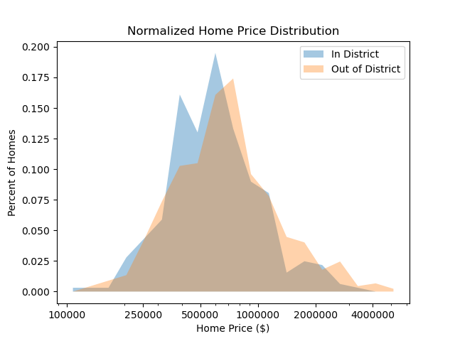
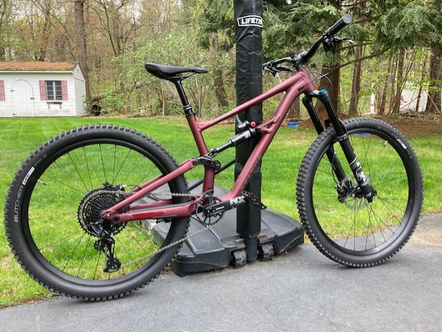

Justin Miller
Student of Computer Science and Engineering1 / 6

Outreach RSI Map: Tree-Plenish
2 / 6

Outreach Sender Map: Tree-Plenish
3 / 6

Ecobee Temperature Dynamics: Affiliated Projects
4 / 6

Dynamic SEIR Fit: Affiliated Projects
5 / 6

Home Price Distribution: Independent Projects
6 / 6

Specialized Status 160